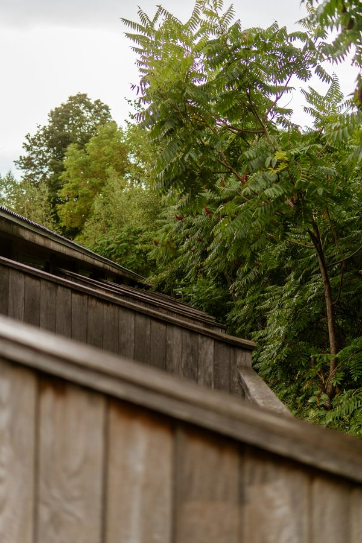
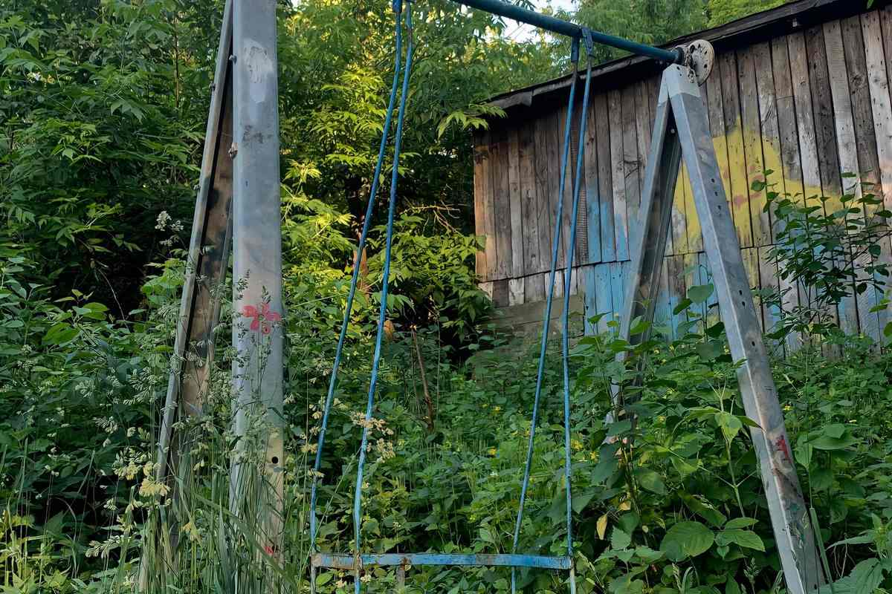

Or call (435) 555-0101 · Replies within one business day.
Since 20091,400+ projectsLicensed & insured (sample)Workmanship guaranteed 5 years[Region] only
Selected work
Recent projects
[City] · Full-yard install, cedar fence

[City] · 6 ft cedar privacy, 140 linear ft

[City] · Site before clearing and grading
Before / after
One yard, one season.
Drag to compare. [City], May to August.
BeforeAfter
Services
What we build
Fencing $38–$52 / ft
Western red cedar and vinyl privacy fencing. Posts set 30 inches deep on crowned concrete footings.
Irrigation from $85
Drip and rotor systems with smart controllers set to city watering schedules. Spring start-ups from $85.
Landscape installation by bid
Grading, soil amendment, sod, and planting, designed for heavy clay soil.
Snow removal Nov–Mar
Residential driveways and small lots, cleared by 6 a.m.
Process
From bid to walkthrough
01
Bid
The owner walks the site, measures, and sends a written bid within two business days.
02
Design
A scaled plan with materials, gate locations, and a firm start date.
03
Build
Most fences take two to four days. Lines are strung and every post is leveled.
04
Walkthrough
We walk the finished work with you and leave the 5-year workmanship guarantee in writing.
Pricing
Typical ranges
Installed prices for most residential projects.
What changes the price: rocky ground, slopes, removing an old fence, and the number of gates. Every bid is fixed after the site walk.
Cedar privacy fence, 6 ft
$42–$52 / ft
Vinyl privacy fence, 6 ft
$38–$48 / ft
Steel-frame walk gate
$425
Sprinkler spring start-up
$85
Fall blowout
$65
Sod, prepped and amended
$1.90 / sq ft
Service area
Where we work
We stay close to home so crews spend their day building, not driving.
[City]
[Nearby town]
[Nearby town]
[Nearby town]
[Nearby town]
[Nearby town]
About
A six-person crew.
[Owner photo]
Bear River is a six-person crew based in [City]. Every fence we set goes 30 inches deep with a crowned concrete footing, and every post is checked with a level. [Owner name] bids every job and is on site the day we pour. If something we built moves, we come back and fix it.
[Owner name], Owner
Sample review (fictional)
“They came back in April to re-tension a gate nobody asked them to.”
A customer in [City]
Sample review (fictional)
“The irrigation redesign cut our summer water bill nearly in half.”